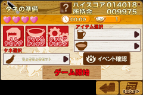

help2 </ title> </ head> <body style =" word-wrap: break-word;-webkit-nbsp- mode: space;-webkit-line-break: after-white-space; ">
<div> <br/> </ div>
<strong> <div> <font size="5"> ●Description of seed preparation </ font> </ div> </ br>
It is to the screen for selecting seeds necessary for the game buttons and shop (tempura). </ Br>
</ Br>
Will be affected during the course of a game item. </ Br>
</ Br>
The game starts when you touch the button on the start of the game. </ Br>
</ Br>
<div align="center">  </ a> </ div> </ br>
</ Br>
Description of <div> <font size="5"> ● selection screen </ font> </ div> </ br>
</ Br>
Selection </ br> 1. Seeds
</ Br>
It is said that a set of tempura and seed in this game. </ Br>
</ Br>
Tempura will be set up to three to one species. </ Br>
</ Br>
Rate rises of each, amount to win, score to win is different in tempura. </ Br>
</ Br>
I will be as difficult as tempura will increase in the game. </ Br> </ br>
</ Br>
Selection </ br> 2. Items
</ Br>
You will be able to proceed advantageously game by using with what impact on the game. </ Br>
</ Br>
There are two types of items, are determined (or less, slot) is the place to each setting. </ Br>
</ Br>
You can be setting the one item in one slot. </ Br>
</ Strong>
<div> <br/> </ div>
</ Body> </ html>